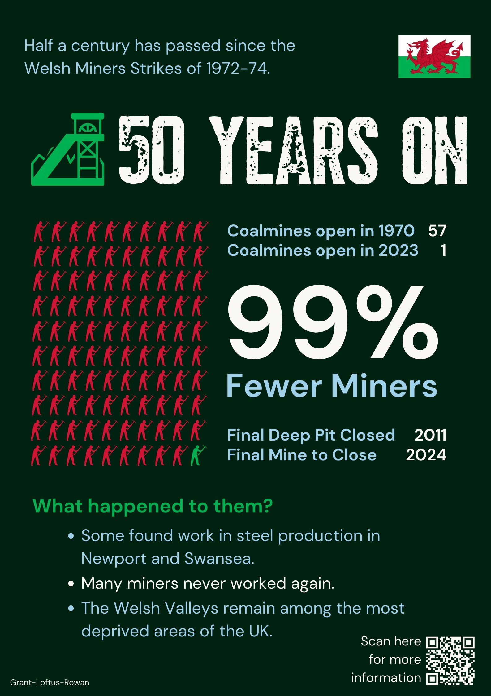

Cardiff was declared capital city of Wales in 1955.
This project reviews the population of Cardiff and Newport throughout subsequent years, using key events to give historical context.
Thanks for your interest in our inforgraphic and presentation.
(Icons and fonts from Canva.)
Data sources used across all aspects of this project:
1) MacroTrends (2023), Newport, UK Metro Area Population 1950-2023, macrotrends.net
2) MacroTrends (2023), Cardiff, UK Metro Area Population 1950-2023, macrotrends.net
Available at: https://www.macrotrends.net/cities/22843/cardiff/population
Accessed: 03 November 2023
3) Northern Mine Research Society (2020), South Wales Coalfield, nmrs.org.uk
Available at: https://www.nmrs.org.uk/mines-map/coal-mining-in-the-british-isles/swales/
Accessed 08 December 2023
4) Statista Research Department (2023), UK coal industry employment 1920-2021, statista.com
Available at: https://www.statista.com/statistics/371069/employment-in-coal-mining-industry-in-the-united-kingdom-uk/
Accessed: 04 December 2023
5) Welsh Government (2023), Population estimates by local authority and year, gov.wales
Available at: https://statswales.gov.wales/Catalogue/Population-and-Migration/Population/Estimates/Local-Authority/populationestimates-by-localauthority-year
Accessed: 04 December 2023
6) UK Data Service (2023), Casweb - Census Data, casweb.uk, dataservice.ac.uk
Available at: https://casweb.ukdataservice.ac.uk/
Accessed: 07 December 2023
7) Office for National Statistics (2023), Regional gross domestic product: all ITL regions, www.ons.gov.uk
Available at: https://www.ons.gov.uk/economy/grossdomesticproductgdp/datasets/regionalgrossdomesticproductallnutslevelregions
Accessed 13 December 2023
1) Wallpaper Access (2012), Welsh Flag [Image], wallpaperaccess.com
Available at: https://wallpaperaccess.com/full/2171492.jpg
Accessed: 04 December 2023
2) Thomas P (2013), City Hall, Cardiff, from above. [Photograph], alamy.com
Available at: https://www.alamy.com/stock-photo-city-hall-cardiff-from-above-57353791.html
Accessed: 03 December 2023
3) BBC (2015), Cardiff declared capital of Wales in 1955, www.bbc.co.uk
Available at: https://www.bbc.co.uk/news/av/uk-wales-35008208
Accessed: 03 December 2023
4) Wikipedia contributors (2023), Delilah (Tom Jones song), wikipedia.com
Available at: https://en.wikipedia.org/w/index.php?title=Delilah_(Tom_Jones_song)&oldid=1185434125
Accessed: 13 December 2023
5) Jones B (2023), Wyndham / Western Colliery, Nantymoel. Wales [Photograph], pinterest.com
Available at: https://www.pinterest.co.uk/pin/450782243927775101/
Accessed: 11 December 2023
6) Erbert D (2023), The Senedd National Assembly Building in Cardiff, Wales [Photograph], www.encirclephotos.com
Available at: https://www.encirclephotos.com/image/the-senedd-national-assembly-building-in-cardiff-wales/
Accessed: 10 December 2023
7) Getty Images (2012), Wales players celebrate after clinching the Six Nations Grand Slam with victory against France at the Millennium Stadium [Photograph], cnn.com
Available at: https://edition.cnn.com/2012/03/17/sport/rugby-wales-france-england/index.html
Accessed: 03 December 2023
8) My QR Code (2023), QR Code Generator, myqrcode.com Available at: https://myqrcode.com/generator Accessed: 10 December 2023
9) Flag Color Codes, Wales Flag Color Codes (2023), flagcolorcodes.com
Available at: https://www.flagcolorcodes.com/wales
Accessed 17 November 2023
10) Bianchi F., Wales Flag Color Codes (2023), coolors.co
Available at: https://coolors.co/palettes/
Accessed 29 November 2023